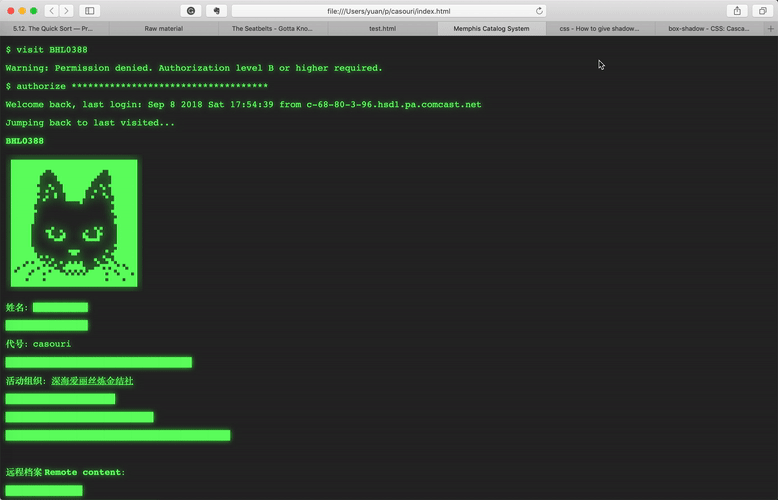

Retro Terminal Blog Style
Table of Contents

Color and content
Basically I made it looks like some official trying to search a person's archive in database via a terminal.
$ visit BHL0388 Warning: Prohibited content with privilege B and lower $ authorize ************************************ Welcome back, last login: Sep 8 2018 Sat 17:54:39 from c-68-80-3-96.hsd1.pa.comcast.net Jumping back to last visited... BHL0388 Name: ██████ ███████████████ Surname: casouri ██████████████████████████████████ Associated Organization: Pluto Alice ████████████████████ ███████████████████████████ █████████████████████████████████████████
Blackouts are cool, aren't they?
My font spec:
.mono:lang(en-us), .mono {
font-family: Courier, Courier New;
}
:lang(zh-Hans) {
font-family: Songti SC;
}
And I added this retry terminal style with green text color and text-shadow by CSS:
.retro {
background-color: #282828;
color: #66FF66;
text-shadow: 0 0 10px #33FF33;
}
I got the color of retro displays form this stackexchange question.
I also need to change my black-and-white profile image to glowing green, this YouTube video is a nice tutorial on add glowing effects onto image.
If you want to know more, just look at my index page's HTML and CSS directly.
Animation
It's pretty cool now, but wouldn't it be better if it shows the actual animation of typing?
Turns out it's quite simple, your can achieve that in pure CSS.
What we need is CSS animation. Here is a nice snippet that has the exact effect we want.
The idea is to set width of the tag to 0 initially, then use the animation to gradually expand the width.
I modified the snippet a bit: (get the files from here: HTML CSS)
/* Google Fonts */
@import url(https://fonts.googleapis.com/css?family=Anonymous+Pro);
/* Global */
html{
min-height: 100%;
overflow: hidden;
}
body{
color: rgba(255,255,255,.75);
font-family: 'Anonymous Pro', monospace;
background-color: rgb(25,25,25);
}
.line-1{
width: 44ch;
border-right: 1ch solid rgba(255,255,255,.75);
white-space: nowrap;
overflow: hidden;
}
/* Animation */
.anim-typewriter{
animation: typewriter 6s steps(44) 1s 1 normal both,
blinkTextCursor 1s steps(44) infinite normal;
}
@keyframes typewriter{
from{width: 0;}
to{width: 44ch;}
}
@keyframes blinkTextCursor{
from{border-right-color: rgba(255,255,255,.75);}
to{border-right-color: transparent;}
}
overflow: hidden;makes sure the content outside current width is hiddenwhite-space: nowrap;makes sure the line is not wrapped- Here is what I modified: because the text has 44 characters, set width to
44ch, and set animation steps to 44. This way we get a nice crisp typing animation. (chis the width of0in current font)
Now all we need to do is apply animations and calculate the timing for each one.
For the "printing" content, I use a showup animation:
@keyframes stage3-animation-a {
from{opacity: 0;}
to{opacity: 1;}
}
It just changes opacity from 0 to 1.
And Cursor?
The tutorial covers how to make a blinking cursor, I just want to add how to make cursor disappear after the "user" finished typing.
To fake this effect, set the initial border color to transparant, and add a time duration to the cursor animation. For example, if the typing animation takes 3 seconds, set your cursor animation to around 4 seconds. I added a second because no one type and hit enter linearly, people type in commands, stop, and hit enter.
So when the cursor animation is over, the border color goes back to transparant: it disappears.